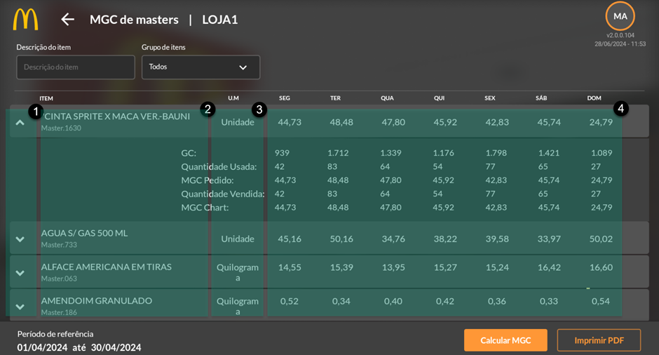
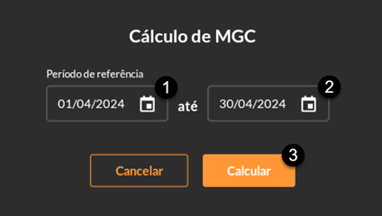
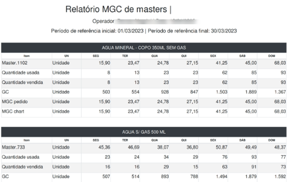

MGC de Master
A última opção do menu lateral é o cálculo da média de MGC de Masters, sendo muito utilizado para ter uma visualização do consumo de cada master a cada mil GCs (incluindo breaks e desperdícios) em um determinado período de referência.
Ao abrir a tela, o primeiro campo é uma barra de pesquisa e um filtro por grupo de itens disponíveis, logo abaixo é exibida uma tabela com uma seta para baixo no qual mostra os dados usados para formar o MGC (quantidade de GC, quantidade usada, MGC do pedido, quantidade vendida e MGC Chart) (1), o nome dos itens masters (2), a unidade de medida (3) e os dias da semana (4).
MGC Chart = Para estocagem e produção dos lanches;
MGC Pedido = Para cálculo de pedidos de compras;
Quantidade usada = Considera vendas + lançamentos de Break, Desperdícios (completos e incompletos) e checklists de segurança alimentar; e
Quantidade vendida = Considera somente vendas.
Para utilizar essa função, selecione o botão “Calcular MGC” no canto inferior direito. Um pop-up será aberto (imagem abaixo) para que seja feito a seleção do período que deseja filtrar o cálculo. Para isto clique no ícone do minicalendário no primeiro dia (1) e aperte em “Ok” no canto inferior direito para salvar, depois selecione o ícone do minicalendário no último dia de referência (2) e escolha a data limite do filtro, após isso aperte em “Ok” para salvar e clique em “Calcular” para finalizar (3).
Após gerar o MGC de Masters é possível baixar o PDF.
